Product design
Ascent.
Designed for the climb.
Ascent is a modular alpine climbing shoe designed around interchangeable sole systems inspired by biomimicry. The idea was to reduce the need to carry multiple pairs of terrain-specific shoes while still adapting to changing conditions.
The project combined product design, usability, and storytelling. I especially contributed to the tactile packaging system so climbers could identify interchangeable parts quickly in low-visibility environments.
SECTION 01 / 13
Introducing Ascent
Ascent is a modular alpine shoe concept that adapts to different stages of a climb. The project brings biomimicry and product storytelling together in one outdoor system.
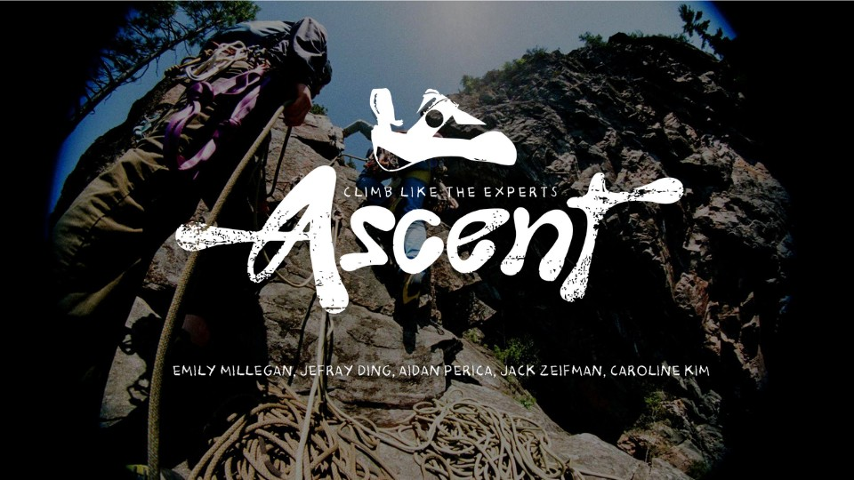
SECTION 02 / 13
Learning from natural climbers
Mountain goats, snakes, and hyraxes provide different references for grip and adaptation. Their climbing strategies become starting points for the shoe concept.
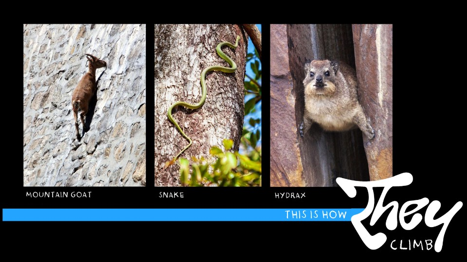
SECTION 03 / 13
The burden of carrying more
The imagery contrasts natural climbers with the equipment people bring into the mountains. That contrast frames the opportunity to rethink how much footwear a climber needs.
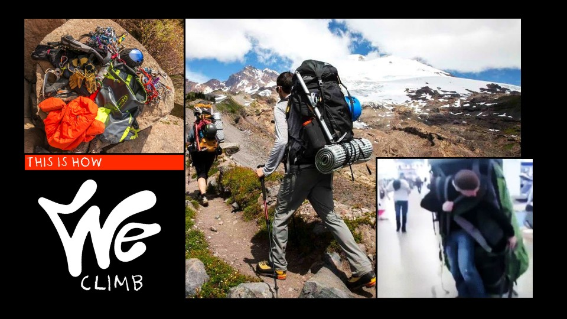
SECTION 04 / 13
Understanding the full journey
The route example makes the length and variety of an alpine outing more concrete. The product has to account for the approach as well as the technical climb.
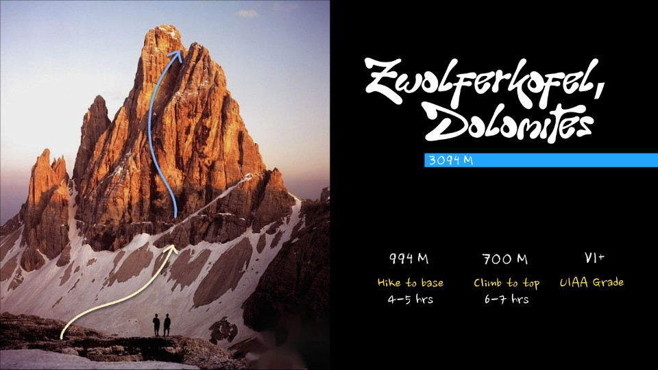
SECTION 05 / 13
Terrain changes before the summit
Rocky approaches and exposed mountain landscapes put different demands on footwear. This context leads into a system that changes with the activity.
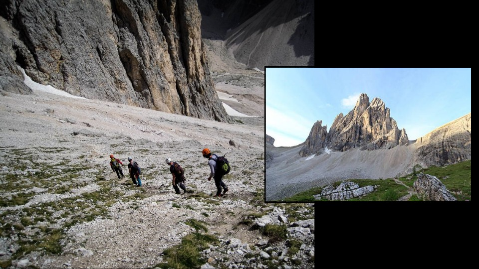
SECTION 06 / 13
One system, different stages
The product proposition is a modular shoe that adapts across the journey. Interchangeable components are presented as a way to reduce the need for separate pairs.
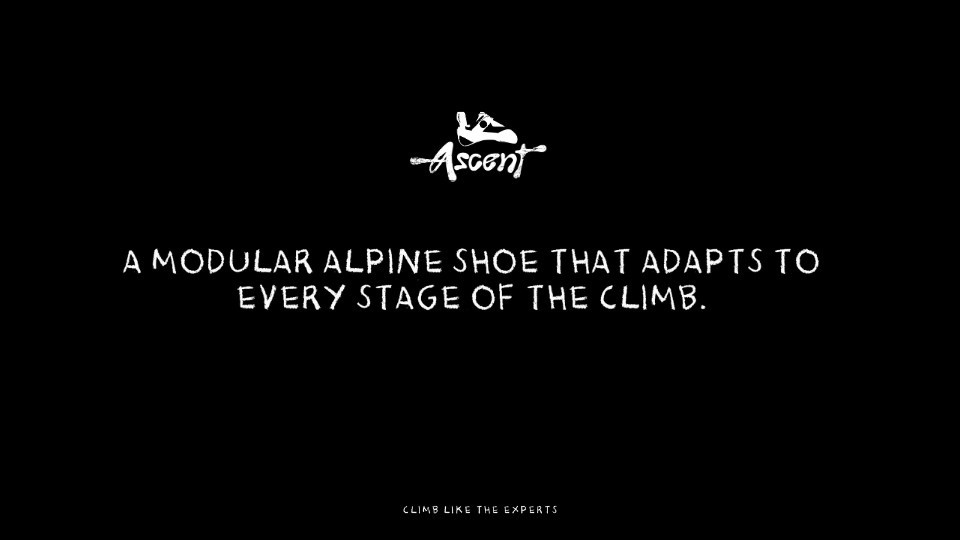
SECTION 07 / 13
Moving between hiking and climbing
The sketches distinguish a roomier hiking mode from a more constrained climbing mode. The design explores how the same system could support comfort on the approach and precision on rock.
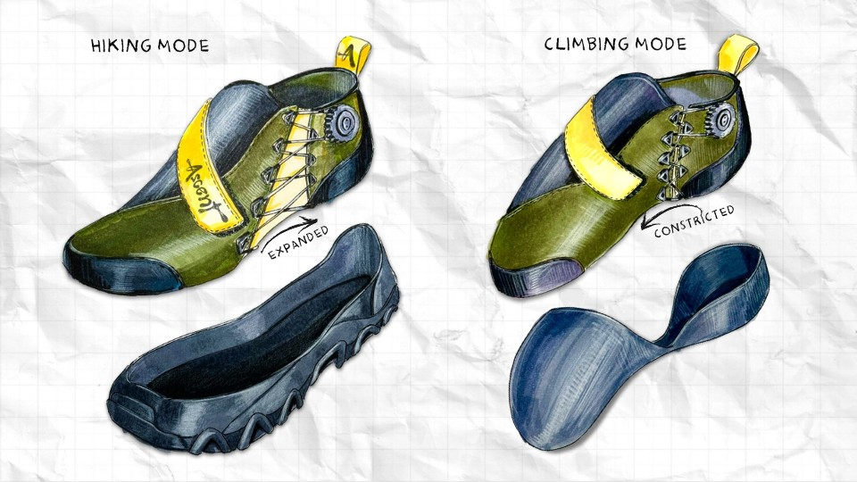
SECTION 08 / 13
Translating biology into traction
Sole studies connect goat hooves, snakeskin, and hyrax feet to different grip patterns. These are biomimetic design explorations rather than tested performance claims.
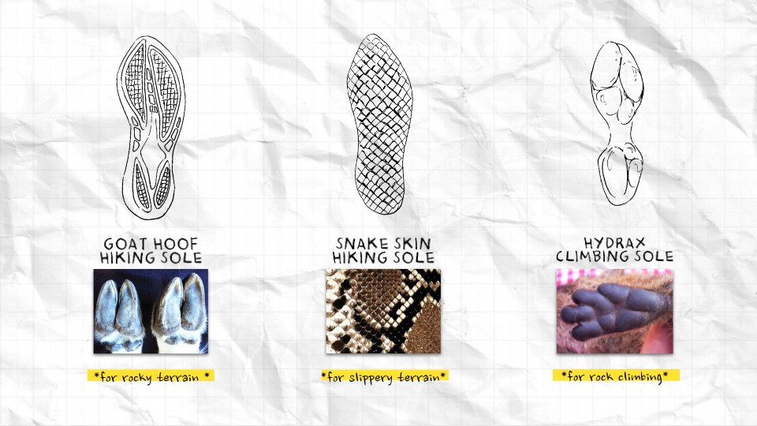
SECTION 09 / 13
Working through the construction
The annotated drawings explain the climbing base, textured edge, and hiking component. They show how the proposed system could combine support, contact, and modularity.
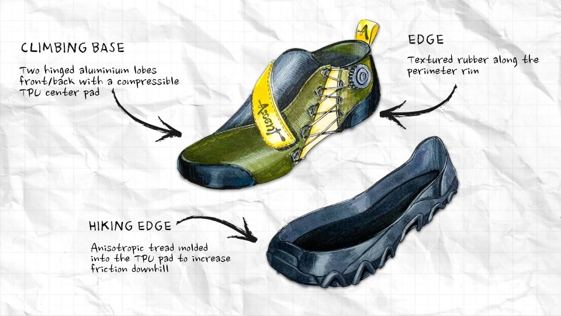
SECTION 10 / 13
Making the system easier to carry
The packaging and cover studies extend the modular idea beyond the shoe itself. Compact storage is part of the proposed benefit for someone managing limited pack space.
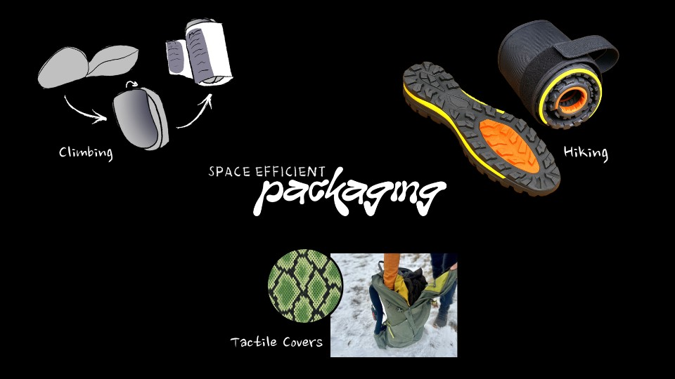
SECTION 11 / 13
Explaining the value of modularity
The comparison brings together the concept’s proposed cost, space, weight, and replacement advantages. These are pitch assumptions that would need prototyping and validation.
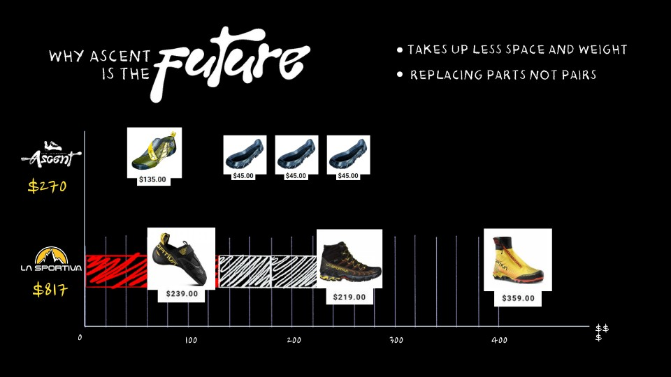
SECTION 12 / 13
A roadmap for growth
The roadmap outlines a possible path from early development toward a larger offering. It communicates the team’s proposed direction rather than a record of achieved milestones.
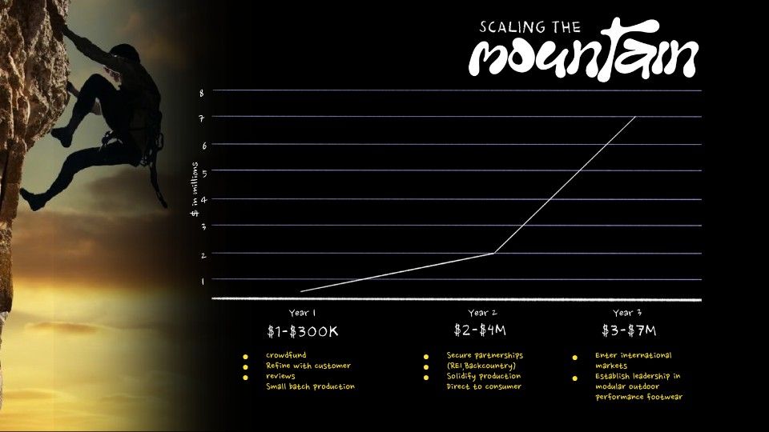
SECTION 13 / 13
Returning to the core idea
The final visual brings Ascent back to the mountain environment. The design story centers on adapting to a climb instead of carrying a different shoe for every stage.
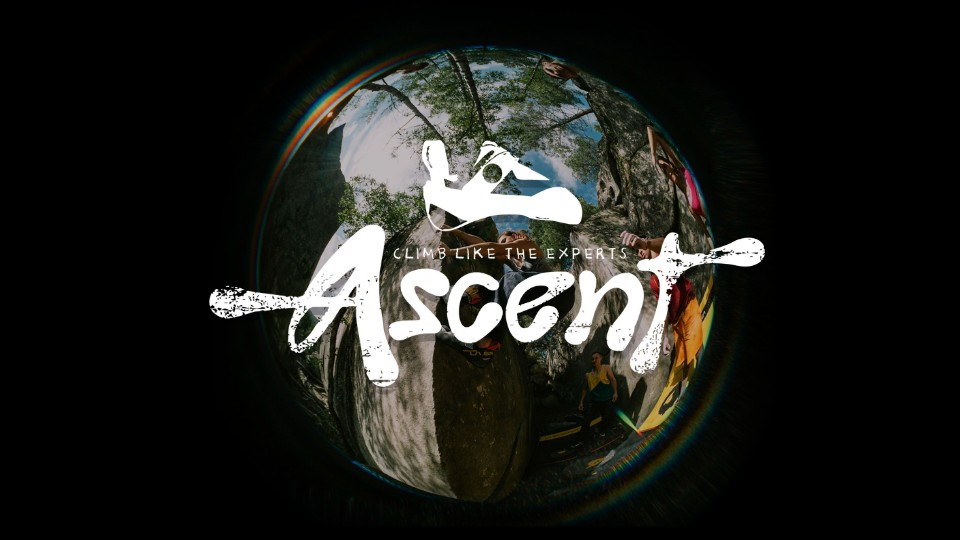